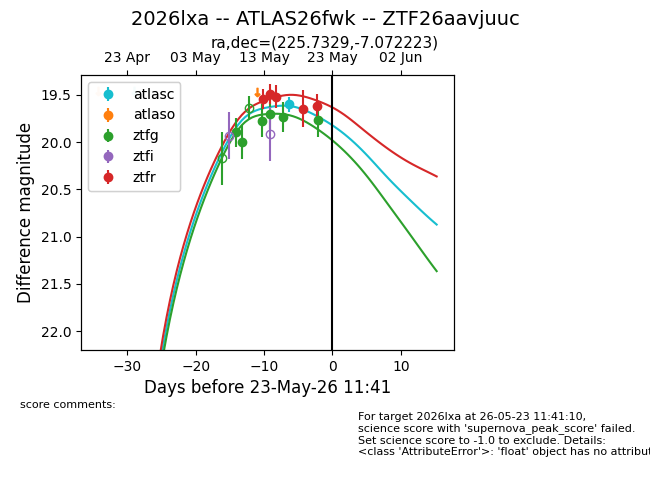
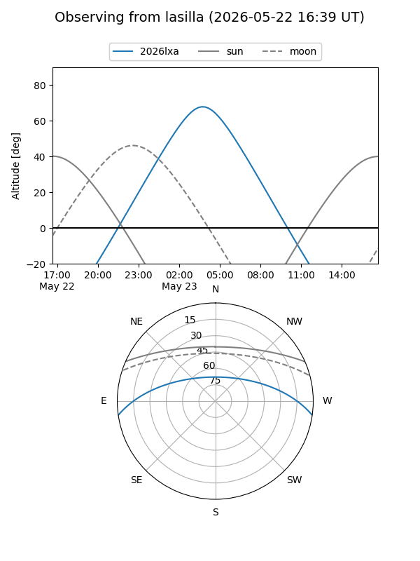
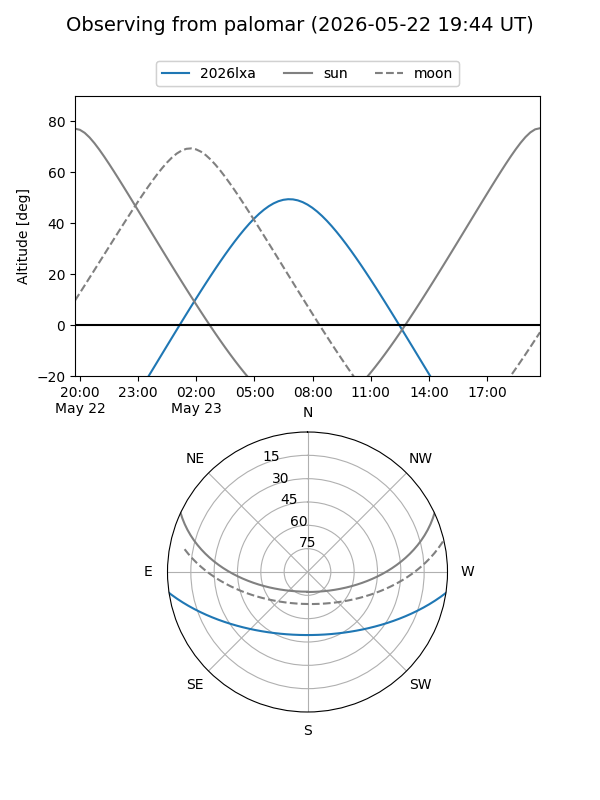
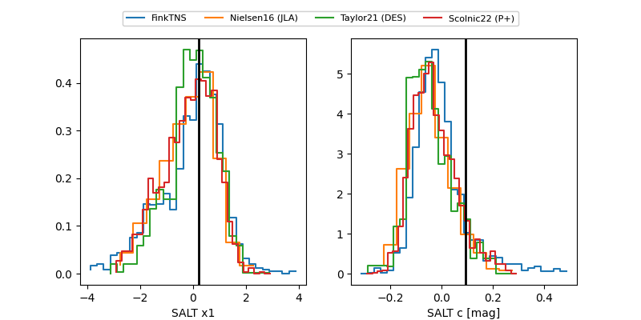

2026lxa
Target 2026lxa at 2026-05-23 11:43
Aliases and brokers:
lsst-FINK: link
lsst-Lasair: link
lsst-ALeRCE: link
ztf-FINK: link
ztf-Lasair: link
ztf-ALeRCE: link
TNS: link
YSE: link
alt names
ZTF26aavjuuc (ztf,fink_ztf)
2026lxa (tns,yse)
ATLAS26fwk (atlas)
Coordinates:
equatorial (ra, dec) = 225.7329,-7.07222
equatorial (HMS+DMS) = 15:02:55.90,-07:04:20.00
galactic (l, b) = (350.6615,+43.28659)
Flags:
TNS confirmed: nan
Photometry:
last atlasc=19.60, ztfg=19.77, ztfr=19.61
1 atlasc, 6 ztfg, 5 ztfr detections
Lightcurve

Visibility


Additional plots
